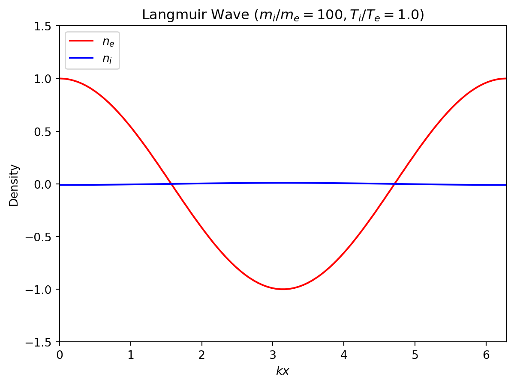
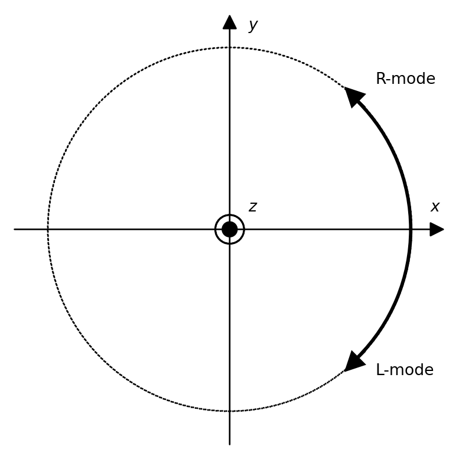
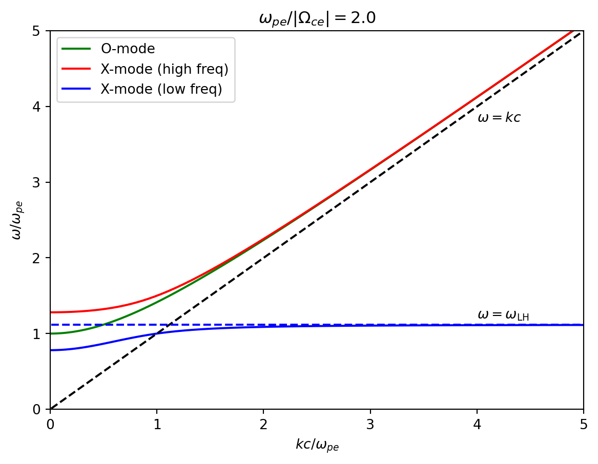

4 冷たいプラズマ中の波動
4.1 プラズマ波動の一般論
プラズマ波動の特徴
- 自由度が多いため対応する波動モードの数も多い
- 磁場によって波動の伝播に異方性が現れる
- 線形でも波動と粒子間でエネルギー・運動量の輸送が起こる（運動論効果）
ここでは簡単のためプラズマを「冷たい」流体として扱う． ここでの「冷たい」という表現はほぼ「流体近似」と同義語である．
典型的な時空間スケール
流体としてのプラズマ中の各粒子種（電子，陽子など）を特徴づける量として
- q_s/m_s （電荷・質量比）
- n_s （数密度）
- v_{\rm ths} （熱速度）
が挙げられる． これらのパラメータと荷電粒子の運動方程式およびPoisson方程式から 次元解析によって各粒子種の特徴的な時空間スケールを求めてみよう．
特徴的な時空間スケールを境に与えられた摂動に対する各粒子種の応答が変わるため， 波動の分散関係の性質もこれらのスケールで切り替わることが多い．
時間スケール
E \neq 0, B=0のとき \begin{aligned} \nabla E = \frac{\rho}{\epsilon_0} \quad &\Rightarrow \quad E = \frac{n_s q_s}{\epsilon_0} L \\ \frac{d \bm{v}}{d t} = \frac{q_s}{m_s} \bm{E} \quad &\Rightarrow \quad \frac{V}{T} = \frac{q_s}{m_s} E \end{aligned} これらより \frac{V}{T L} = \frac{1}{T^2} = \frac{n_s q_s^2}{\epsilon_0 m_s} \equiv \omega_{ps}^2 ここで \omega_{ps} はプラズマ周波数と呼ばれる．直感的には 1/\omega_{ps} が粒子の集合としての慣性を表すものとして理解できる．
E = 0, B \neq 0のとき \begin{aligned} \frac{d \bm{v}}{d t} = \frac{q_s}{m_s} \bm{v} \times \bm{B} \quad &\Rightarrow \quad \frac{V}{T} = \frac{q_s}{m_s} E \end{aligned} これらより \frac{1}{T} = \frac{q_s B}{m_s} \equiv \Omega_{cs} これは単一粒子の運動で考えたサイクロトロン（ジャイロ）周波数 \Omega_{cs} に他ならない．
空間スケール
特徴的な速度と時間スケールから対応する空間スケールが定義される．
速度として熱速度 v_{\rm ths} を用いたとき
プラズマ周波数との比からDebye長 \lambda_{Ds} L = \frac{v_{\rm ths}}{\omega_{ps}} \equiv \lambda_{Ds} ジャイロ周波数との比からジャイロ半径 r_g L = \frac{v_{\rm ths}}{\Omega_{cs}} \equiv r_{gs} が定義できる．冷たいプラズマとして扱うには，考えている波の波長が これらのスケールよりも十分に長いことが必要である．
速度として光速 c を用いたとき
プラズマ周波数との比から慣性長 d_s L = \frac{c}{\omega_{ps}} \equiv d_s ジャイロ周波数との比からは L = \frac{c}{\Omega_{cs}} が定義できる．ただし c/\Omega_{cs} は相対論的な状況以外では直接現れることはまれである．
演習問題 4.1
粒子種sの密度および質量を用いて V_{\rm As}= B / \sqrt{\mu_0 n_s m_s} なる速度を定義する．（例えばsとして電子を考えて定義したV_{\rm A e}のことを電子Alfven速度と呼ぶ．）このとき， \frac{\Omega_{cs}}{\omega_{ps}} = \frac{V_{\rm As}}{c} を示せ．これによって慣性長は d_s = \frac{c}{\omega_{ps}} = \frac{V_{\rm As}}{\Omega_{cs}} と書き表すこともできる．
粒子種sの圧力 P_s = n_s m_s v_{\rm ths}^2 と磁気圧 P_b = B^2/2 \mu_0 の比で \beta_s = P / P_bを定義するとき， \beta_s = 2 \left( \frac{v_{\rm ths}}{V_{\rm As}} \right)^2 となることを示せ．これを粒子種sのプラズマベータと呼ぶ．
分散関係の一般形
Maxwell方程式をフーリエ変換して以下を得る． \begin{aligned} & i \bm{k} \times \bm{\tilde{B}} = \mu_0 \bm{\tilde{J}} - \epsilon_0 \mu_0 i \omega \bm{\tilde{E}} \\ & i \bm{k} \times \bm{\tilde{E}} = i \omega \bm{\tilde{B}} \end{aligned}
もし \bm{\tilde{J}} = \bm{\sigma} \cdot \bm{\tilde{E}} の形で書けるようなテンソル \bm{\sigma} が与えられれば，\bm{\chi} = i \bm{\sigma}/\omega \epsilon_0 を用いて分散関係は \epsilon_0 \left[ \bm{I} + \bm{\chi} + \begin{pmatrix} -(n_y^2 + n_z^2) & n_y n_x & n_z n_x \\ n_x n_y & -(n_z^2 + n_x^2) & n_z n_y \\ n_x n_z & n_y n_z & -(n_x^2 + n_y^2) \end{pmatrix} \right] \cdot \bm{\tilde{E}} = \bm{0} \qquad(4.1) によって与えられる．ここで \bm{n} = \bm{k} c /\omegaは屈折率である． \bm{\epsilon}, \bm{\sigma}, \bm{\chi} はそれぞれ以下のように呼ばれる．
- \bm{\epsilon} = \epsilon_0 (1 + \bm{\chi})：誘電率テンソル
- \bm{\sigma}：電気伝導度テンソル
- \bm{\chi}：電気感受率テンソル
さて，ここで仮定した \bm{\tilde{J}} = \bm{\sigma} \cdot \bm{\tilde{E}} の形がどのような 場合に成り立つのか考えてみよう．\bm{\tilde{J}} = \bm{\tilde{J}} (\bm{\tilde{E}})は， 摂動電場\bm{\tilde{E}}が与えられたときのプラズマの応答によって流れる電流を表していると 考えられる．これは一般には非線形な関数であるが，摂動が微小なときには \tilde{\bm{J}} (\tilde{\bm{E}}) \approx \tilde{\bm{J}}(0) + \underbrace{ \frac{\partial}{\partial \tilde{\bm{E}}} \tilde{\bm{J}} \bigg|_{\tilde{\bm{E}} = 0} }_{\bm{\sigma}} \cdot \tilde{\bm{E}} + O(\tilde{\bm{E}}^2) のように展開できる．したがって，式 4.1 はこの1次の項の寄与だけを 考えたこと（線形近似）に相当している．
多成分系についても，線形近似のもとでは電気伝導度への寄与は各成分の和となる． \tilde{\bm{J}} = \sum_{s} \tilde{\bm{J}}_s = \sum_{s} \bm{\sigma}_{s} \cdot \tilde{\bm{E}} したがって，各粒子種に対して独立に電気伝導度を求めて，最後に和 \bm{\sigma} = \sum_{s} \bm{\sigma}_s をとれば全体としての応答が求まる． すなわち，分散関係を求める問題は各粒子種の \bm{\sigma}_s または \bm{\chi}_s を 求める問題に帰着される．
演習問題 4.2
- 式 4.1 を示せ．
- 真空の場合は\bm{\sigma} = 0である． このとき 式 4.1 から真空中の電磁波 \omega^2 = k^2 c^2 \qquad(4.2) が得られることを示せ．
- 磁場の揺らぎがない（すなわち \partial \bm{B}/\partial t = 0 を満たす）とき， 電場が静電ポテンシャルのみ \bm{E} = - \nabla \phi \qquad(4.3) で書けることを示し，このときの分散関係が \bm{n} \cdot \bm{\epsilon} \cdot \bm{n} = 0 \qquad(4.4) と書けることを示せ． これは電場の揺らぎしかない波動（静電波動）を記述しているため，静電近似の 分散関係と呼ばれる．
4.2 非磁化プラズマ中の静電波動
背景磁場無し(\bm{B} = 0)かつ，磁場ゆらぎ無し(\delta \bm{B} = 0)の場合を考える． このときの波動は縦波なので1次元の伝播方向(x方向)の運動のみ考えればよい．
分散関係
粒子種sの質量保存則，運動量保存則，エネルギー保存則（断熱の状態方程式）を線形化すると \begin{aligned} &- i \omega \tilde{n}_s + i k n_0 \tilde{v}_s = 0 \\ &-i \omega \tilde{v}_s = - i k \frac{\tilde{p}_s}{n_0 m_s} + \frac{q_s}{m_s} \tilde{E} \\ &\tilde{p}_s = \frac{\gamma p_{s,0}}{n_0} \tilde{n}_s \end{aligned} \qquad(4.5) これらから \tilde{v}_s = i \frac{\omega}{\omega^2 - k^2 C_s^2} \frac{q_s}{m_s} \tilde{E} \quad \quad \left( C_{s}^2 \equiv \frac{\gamma P_{s,0}}{n_0 m_s} \right) 摂動電流は \tilde{J}_{s} = q_s n_0 \tilde{v}_{s} と書けるから（静電近似の分散関係 式 4.4 を用いて） 1 - \frac{\omega_{pe}^2}{\omega^2 - k^2 C_e^2} - \frac{\omega_{pi}^2}{\omega^2 - k^2 C_i^2} = 0 \quad \quad \left( \omega_{ps}^2 = \frac{n_0 e^2}{\epsilon_0 m_s} \right) \qquad(4.6) を得る．この数値解の例を 図 4.1 に示す．
Langmuir波（プラズマ振動）
高周波(\omega^2/k^2 \gg C_e^2 \gg C_i^2)のとき，分散関係は以下で与えられる． \omega^2 \approx \omega_{pe}^2 (1 + \gamma k^2 \lambda_{De}^2) 軽い電子のみが電場に反応し，重たいイオンはほぼ静止しているため電荷密度(n_i \neq n_e)の摂動を伴う．
実際に電子とイオンの密度揺らぎの関係（固有ベクトル）を図示すると 図 4.2 となり，イオン密度の揺らぎはほとんどないことが分かる．

イオン音波
低周波・長波長(\omega_{pe}^2 \gg \omega^2, \omega_{pe}^2/k^2 \gg C_e^2)のとき，分散関係は \omega^2 \approx k^2 V_{s}^2 \quad \quad \left( V_{s}^2 \equiv \frac{\gamma (p_{e,0} + p_{i,0})}{n_0 m_i} \right) となる．十分低周波・長波長のため電子とイオンが同位相で反応し，ほぼ電荷中性(n_i \approx n_e)が保たれる．これは通常の流体力学的な音波に対応する．復元力には電子・イオン両方の圧力が寄与する．
Langmuir波の場合と同様に電子とイオンの密度揺らぎの関係（固有ベクトル）を図示すると 図 4.3 となり，イオンと電子の密度の揺らぎはほとんど一致していることが分かる．
演習問題 4.3
- 式 4.5 を示せ．
- 式 4.6 を示せ．
- 電場と電子およびイオンの密度の関係（固有ベクトル）が \begin{aligned} \frac{\tilde{n}_e}{n_0} &= -i \left( \frac{e}{m_e} \right) \frac{k}{\omega^2 - k^2 C_e^2} \tilde{E} \\ \frac{\tilde{n}_i}{n_0} &= +i \left( \frac{e}{m_i} \right) \frac{k}{\omega^2 - k^2 C_i^2} \tilde{E} \end{aligned} で与えられることを示し，長波長近似 k \lambda_{De} \sim k \lambda_{Di} \ll 1 で． Langmuir波については| \tilde{n}_i/\tilde{n}_e | \ll 1， イオン音波については | \tilde{n}_i/\tilde{n}_e | \sim 1 となることを示せ．
4.3 磁化プラズマ中の波動
有限の背景磁場 \bm{B}_0 = (0, 0, B_0) がある場合を考える． ここでは電磁波も静電波も両方扱うが，簡単化のため温度はゼロ（p_s = 0）と仮定する． これによって音波は除外される（\omega = 0となる）ことに注意しよう． 以降は波数ベクトルとして \bm{k} = (k_{\perp}, 0, k_{\parallel}) を仮定する．
分散関係
運動方程式を線形化して - i \omega \bm{\tilde{v}} = \frac{q}{m} \bm{\tilde{E}} + \bm{\tilde{v}} \times \bm{\Omega}_{c} を得る．ただし，\bm{\Omega}_{c} = (0, 0, \Omega_{c}) = (0, 0, q_sB_0/m_s) と定義した． ここで\Omega_{c}には符号も含まれることに注意せよ．
\bm{\tilde{v}}について解くと \bm{\tilde{v}} = i \frac{q}{m} \begin{pmatrix} \frac{\omega}{\omega^2 - \Omega_c^2} & +i \frac{\Omega_c}{\omega^2 - \Omega_c^2} & 0 \\ -i \frac{\Omega_c}{\omega^2 - \Omega_c^2} & \frac{\omega}{\omega^2 - \Omega_c^2} & 0 \\ 0 & 0 & \frac{1}{\omega} \end{pmatrix} \cdot \tilde{\bm{E}} \qquad(4.7) となり，これを代入することで最終的な分散関係は \begin{pmatrix} n_z^2 - \epsilon_1 & +i \epsilon_2 & -n_x n_z \\ -i \epsilon_2 & n_x^2 + n_z^2 - \epsilon_1 & 0 \\ -n_x n_z & 0 & n_x^2 - \epsilon_3 \end{pmatrix} \cdot \bm{\tilde{E}} = 0 \qquad(4.8) となる．ただし \begin{aligned} \epsilon_1 &= 1 - \sum_{s} \frac{\omega_{ps}^2}{\omega^2 - \Omega_{cs}^2} \\ \epsilon_2 &= \sum_{s} \frac{\Omega_{cs}}{\omega} \frac{\omega_{ps}^2}{\omega^2 - \Omega_{cs}^2} \\ \epsilon_3 &= 1 - \sum_{s} \frac{\omega_{ps}^2}{\omega^2} \end{aligned} と定義した．
演習問題 4.4 式 4.7 を示せ．
平行伝播: \bm{k} \parallel \bm{B}_0
\bm{n} = (0, 0, n)を 式 4.8 に代入して \begin{pmatrix} n^2 - \epsilon_1 & +i \epsilon_2 & 0 \\ -i \epsilon_2 & n^2 - \epsilon_1 & 0 \\ 0 & 0 & - \epsilon_3 \end{pmatrix} \cdot \bm{\tilde{E}} = 0 \qquad(4.9) を得る．これを \begin{aligned} \tilde{E}_R = (\tilde{E}_x - i \tilde{E}_y) / \sqrt{2}, \quad \tilde{E}_L = (\tilde{E}_x + i \tilde{E}_y) / \sqrt{2} \end{aligned} を使って書き直すと \begin{pmatrix} n^2 - \epsilon_R & 0 & 0 \\ 0 & n^2 - \epsilon_L & 0 \\ 0 & 0 & -\epsilon_3 \end{pmatrix} \begin{pmatrix} \tilde{E}_R \\ \tilde{E}_L \\ \tilde{E}_z \end{pmatrix} = 0 \qquad(4.10) となり対角化される．ただし \begin{aligned} \epsilon_R = \epsilon_1 + \epsilon_2, \quad \epsilon_L = \epsilon_1 - \epsilon_2 \end{aligned} と定義した．
演習問題 4.5 式 4.10 を示せ．
縦波
zz 成分（電場が磁力線に平行）からは \omega^2 = \omega_{pe}^2 + \omega_{pi}^2 \approx \omega_{pe}^2 が得られる．これは長波長（温度=0）極限のLangmuir波（プラズマ振動）である．
右回り・左回り円偏波（横波）
\tilde{E}_R \neq 0, \tilde{E}_L = 0 のとき
分散関係は n^2 = \epsilon_Rであり，波の電場は \tilde{E}_{x} (t) = A \exp \left[ - i \omega t \right], \quad \tilde{E}_{y} (t) = A \exp \left[ - i \left(\omega t - \frac{\pi}{2} \right) \right], で与えられる．すなわち波は円偏光でE_yはE_xに対して位相が\pi/2だけ遅れている．
このときの波動を 右回り（R-mode） と定義する． x-y平面での波動ベクトルの回転は反時計回りで，負電荷の粒子の回転方向と同じ向き． （図 4.4 参照）
\tilde{E}_R = 0, \tilde{E}_L \neq 0 のとき
分散関係は n^2 = \epsilon_Lであり，波の電場は \tilde{E}_{x} (t) = A \exp \left[ - i \omega t \right], \quad \tilde{E}_{y} (t) = A \exp \left[ - i \left(\omega t + \frac{\pi}{2} \right) \right], で与えられる．すなわち波は円偏光で，E_yはE_xに対して位相が\pi/2だけ進んでいる．
このときの波動を 左回り（L-mode） と定義する． x-y平面での波動ベクトルの回転は時計回りで，正電荷の粒子の回転方向と同じ向き． （図 4.4 参照）

R-modeの分散関係 n^2 = 1 - \sum_{s} \frac{\omega_{ps}^2}{\omega (\omega + \Omega_{cs})} \qquad(4.11) で\omega \rightarrow - \omegaと置き換えるとL-modeの分散関係が得られる． すなわち，R-modeの分散関係のみを扱い， \omega > 0 の解を右回り， \omega < 0 の 解を左回りと解釈すればよい．
演習問題 4.6 固有ベクトルが\tilde{E}_R \neq 0, \tilde{E}_L = 0 のときは右回り円偏波，\tilde{E}_R = 0, \tilde{E}_L \neq 0 のときは左回り円偏波となることを確かめよ．
共鳴とカットオフ
以下でg(\omega)を定義すると分散関係の解はn^2 = g(\omega)で与えられる． g(\omega) = 1 - \frac{\omega_{pe}^2}{\omega (\omega + \Omega_{ce})} - \frac{\omega_{pi}^2}{\omega(\omega + \Omega_{ci})}
g(\omega)の概形は 図 4.5 のようになる．
共鳴
低周波\omega \sim 0から\omega \rightarrow - \Omega_{ci}および\omega \rightarrow -\Omega_{ce}に周波数が近づくに連れてg(\omega) \rightarrow +\inftyに発散する．これは物理的には波動の周波数とジャイロ周波数が等しくなることで，イオンおよび電子が波動と共鳴することを意味している．共鳴によって波動と粒子間でのエネルギーのやり取りが起こるが，この効果を考えるには運動論的な取り扱いが必要になる．
カットオフ
高周波極限\omega \pm \inftyでは明らかにg(\omega) \rightarrow 1となるが，周波数を下げていくとあるところでg(\omega) < 0となる．このときnが実数となる解が存在しなくなるため，波動はプラズマ中を伝播できなくなる．これをカットオフと呼ぶ．
g(\omega) = 0 の条件からカットオフ周波数 \omega_{co} が求まる．ここで \omega_{co}^2 \gg \omega_{pi}^2, \Omega_{ci}^2 を仮定すると \omega_{co} = \frac{1}{2} \left[ - \Omega_{ce}\pm \sqrt{\Omega_{ce}^2 + 4 \omega_{pe}^2} \right] \qquad(4.12) 符号正の解がR-modeのカットオフ周波数( \omega_{\rm R,co} )，負の解がL-modeのカットオフ周波数( \omega_{\rm L,co} )である．
分散関係は 図 4.6 のようになり，短波長・高周波で真空中の電磁波の分散関係 \omega^2 = k^2 c^2 に漸近し，低周波・長波長でプラズマの影響を受けてカットオフが生じる．
なお，密度が十分に高い（磁場が弱い）ときにはカットオフ周波数は \omega_{co} \approx \omega_{pe} で近似でき，このときの分散関係は \omega^2 \approx \omega_{pe}^2 + k^2 c^2 \qquad(4.13) のように簡単化できる．
演習問題 4.7
- 式 4.12 を示せ．
- |\omega_{\rm R, co}| > |\omega_{\rm L, co}|であることを示せ．
演習問題 4.8
- 磁場の影響が無視できるとき，プラズマ中を伝播する線形の電磁波は以下の形の波動方程式（Kline-Gordon方程式）によって記述される． \frac{\partial^2}{\partial t^2} E = c^2 \frac{\partial^2}{\partial x^2} E - \omega_{pe}^2 E この波動方程式から得られる分散関係が 式 4.13 と一致することを確かめよ．
- 周波数\omegaを持つ波動 E(x, t) = \tilde{E} (x) \exp \left( i \omega t \right) を考え，\tilde{E} (x) が満たす微分方程式を求めよ．
- プラズマの密度分布として，x < 0は真空領域，x > 0は有限の密度を持ったプラズマで一様に満たされている場合を考えよう． すなわち，\omega_{pe}は \omega_{pe}= \begin{cases} 0 \quad & (x < 0) \\ \omega_0 \quad & (x > 0) \end{cases} で与えられる（\omega_0 = {\rm const}）． このとき， \tilde{E}(x) の一般解を x < 0 および x > 0 のそれぞれの領域について書き下せ． ただし 0 < \omega < \omega_0 とする．
- 真空中からプラズマ中に入射された周波数 \omega \gg \omega_0 の電磁波はプラズマ領域に c/\omega_{pe} 程度だけ染み込むことができるが，それ以上はプラズマ中を伝播することができずに全反射される． このことを示せ．
例：電離層での電磁波の反射
地球大気では高度が上がるにつれて太陽放射で電離された電離層が形成している． ピーク電子密度で見積もった典型的な電子プラズマ周波数は f_{pe} = \frac{\omega_{pe}}{2\pi} \approx 9 \times 10^{6} \left( \frac{n_e}{10^6 \, {\rm cm^{-3}}} \right)^{1/2} \, {\rm Hz} と書け，（電離層は十分にプラズマ密度が高いため）これをカットオフ周波数とみなすことができる． すなわち，短波帯(3-30 MHz)の電磁波は電離層で反射されるため宇宙空間に到達できない． 逆にこのことを用いて電子密度の高度依存性の推定ができる．
低周波極限
\omega \rightarrow 0 のとき，電荷中性条件に注意すると \begin{aligned} \frac{\omega_{pe}^2}{\omega (\omega + \Omega_{ce})} + \frac{\omega_{pi}^2}{\omega (\omega + \Omega_{ci})} & \approx - c^2 \frac{\mu_0 n_0 (m_e + m_i)}{B_0^2} \\ & = - \left( \frac{c}{V_{\rm A}} \right)^2 \end{aligned} \qquad(4.14) したがって \left( \frac{kc}{\omega} \right)^2 = 1 + \left( \frac{c}{V_{\rm A}} \right)^2 \approx \left( \frac{c}{V_{\rm A}} \right)^2 となり磁気流体力学近似のAlfven波の分散関係 \omega^2 = k^2 V_{\rm A}^2 が得られる．
演習問題 4.9
- 平衡状態で電荷中性が成り立っているとき， \frac{\omega_{pe}^2}{\Omega_{ce}} + \frac{\omega_{pi}^2}{\Omega_{ci}} = 0 となることを示せ．（サイクロトロン周波数が符号付きで定義されていることに注意せよ．）
- 電荷中性が成り立つとき，|\omega/\Omega_{ce}| \ll 1, |\omega/\Omega_{ci}| \ll 1 を用いて 式 4.14 を示せ．
サイクロトロン波
低周波 \omega/kc \ll 1 のとき， \left( \frac{k c}{\omega} \right)^2 \approx - \frac{\omega_{pe}^2}{\omega (\omega + \Omega_{ce})} - \frac{\omega_{pi}^2}{\omega (\omega + \Omega_{ci})} となる．これは \omega についての2次式 \left[ 1 + \left( \frac{\omega_{pe}}{kc} \right)^2 + \left( \frac{\omega_{pi}}{kc} \right)^2 \right] \omega^2 + \left( \Omega_{ci}+ \Omega_{ce}\right) \omega + \Omega_{ci}\Omega_{ce}= 0. \qquad(4.15) に書き直せるので解析的にも解ける．図 4.7 に分散関係を示す． 右回りのモードは電子サイクロトロン波動（ホイッスラー波動），左回りのモードはイオンサイクロトロン波動と呼ばれる．
さらに簡単にするため，\omega \ll \lvert \Omega_{ce}\rvert の近似を適用すると \left( \frac{k c}{\omega_{pi}} \right)^2 = \frac{\left( \omega/\Omega_{ci}\right)^2}{\omega/\Omega_{ci}+ 1} \qquad(4.16) を得る．これより，低周波極限 （\omega/\Omega_{ci}\ll 1）では\omegaの正負に関わらず分散関係が \omega^2 = k^2 V_{\rm A}^2 で与えられるのに対して，\omega / \Omega_{ci}\sim 1 ， k c/\omega_{pi}\sim 1 （イオン慣性長と同程度の波長）では \omega の正負に依存する分散性（d \omega / dk \neq 0）が現れることが分かる．これは電子とイオンの慣性の差(Hall効果)によるものである．
垂直伝播: \bm{k} \perp \bm{B}_0
\bm{n} = (n, 0, 0)を代入すると
\begin{pmatrix} - \epsilon_1 & -i \epsilon_2 & 0 \\ +i \epsilon_2 & n^2 - \epsilon_1 & 0 \\ 0 & 0 & n^2 - \epsilon_3 \end{pmatrix} \cdot \bm{\tilde{E}} = 0
O-mode (正常波, ordinary mode)
zz成分から \omega^2 = \omega_{pe}^2 + \omega_{pi}^2 + k^2 c^2 \approx \omega_{pe}^2 + k^2 c^2 このときの固有ベクトルは \begin{cases} \bm{\tilde{E}} = E_0 \, (0, 0, 1) \\ \bm{\tilde{B}} = E_0 \, (0, -k/\omega, 0) \end{cases} \qquad(4.17) となり，通常の電磁波の偏光と同じ性質を持つことから正常波（ordinary modeまたはO-mode）と呼ばれる． 図 4.8 参照．
演習問題 4.11 式 4.17 およびこれに対応する荷電粒子の速度の摂動が \tilde{\bm{v}} = E_0 \, \left( 0, 0, \frac{q}{m} \frac{i}{\omega} \right) となることを示せ．
X-mode (異常波, extraordinary mode)
分散関係は n^2 = \frac{\epsilon_R \epsilon_L}{\epsilon_1} \qquad(4.18) と書ける．ここで高周波波動を考え，電子の寄与のみを残すと n^2 =\frac {(\omega^2 - \omega_{\rm R,co}^2) (\omega^2 - \omega_{\rm L,co}^2)} {\omega^2 (\omega^2 - \omega_{\rm UH}^2)} \qquad(4.19) を得る．ここで\omega_{\rm UH}^2 = \omega_{pe}^2 + \Omega_{ce}^2 は高域混成周波数(upper hybrid frequency)と呼ばれる． これより，\omega_{\rm R,co} または \omega_{\rm L,co} でカットオフ，\omega_{\rm UH} で共鳴が起こることが分かる．
固有ベクトルは \begin{cases} \bm{\tilde{E}} = E_0 \, (i \epsilon_2/\epsilon_1, 1, 0) \\ \bm{\tilde{B}} = E_0 \, (0, 0, k/\omega) \end{cases} で与えれ，通常の電磁波の偏光と異なり \bm{k} と平行成分の電場を持つ． このためこのモードは異常波（extraordinary modeまたはX-mode）と呼ばれる． 図 4.8 参照．
演習問題 4.12
- 式 4.19 を示せ．
- \omega_{\rm L,co}^2 < \omega_{\rm UH}^2 < \omega_{\rm R,co}^2 を確かめよ．

低周波極限
式 4.18 において，電荷中性条件に注意して \omega \rightarrow 0 とすると \begin{aligned} & \epsilon_1 \approx 1 + \left( \frac{c}{V_{\rm A}} \right)^2 \\ & \epsilon_2 \approx 0 \end{aligned} \qquad(4.20) を得る．したがって， \omega^2 = \frac{(k V_{\rm A})^2}{1 + (V_{\rm A}/c)^2} \approx k^2 V_{\rm A}^2 周波数が上がるにつれて \epsilon_1 \rightarrow 0 の共鳴が起こる． \omega \ll \lvert \Omega_{ce}\rvert とすると， \epsilon_1 \approx 1 + \left( \frac{\omega_{pe}}{\Omega_{ce}} \right)^2 - \frac{\omega_{pi}^2}{\omega^2 - \Omega_{ci}^2} これより共鳴周波数は \omega_{\rm LH}^2 \approx \lvert \Omega_{ci}\Omega_{ce}\rvert \qquad(4.21) ただし， \omega_{pi}\gg \Omega_{ci} および \omega_{pe}\gg \Omega_{ce} を仮定した． \omega_{\rm LH} は低域混成周波数(lower hybrid frequency)と呼ばれる． 図 4.9 参照．
Dispersion Measure (分散量度)
プラズマ中を伝播する電磁波の遅延を用いることで伝播経路上の密度を推定することができる． 典型的な星間空間では \omega_{pe}\gg \lvert \Omega_{ce}\rvert なので，以降では磁場の影響は無視する．
\omega^2 = \omega_{pe}^2 + k^2 c^2 \quad \Rightarrow \quad v_g = \frac{\partial \omega}{\partial k} = c \sqrt{1 - \left( \frac{\omega_{pe}}{\omega} \right)^2}
電磁波の周波数はプラズマ周波数よりも十分高い( \omega \gg \omega_{pe} )とし，伝播にかかる時間 t_p を求めると t_p = \int_{0}^{d} \frac{ds}{v_g} \approx \frac{d}{c} + \frac{e^2}{2 m_e c \epsilon_0} \frac{1}{\omega^2} \int_{0}^{d} n_e ds ここでdispersion measureを {\rm DM} \equiv \int_{0}^{d} n_e ds で定義し，異なる周波数の伝播時間の差 \Delta t_p をとると \Delta t_p = 4 \times 10^{-3} \left( \frac{{\rm DM}}{{\rm pc \cdot cm^{-3}}} \right) \left[ \left( \frac{f_1}{1 \, {\rm GHz}} \right)^{-2} - \left( \frac{f_2}{1 \, {\rm GHz}} \right)^{-2} \right] \, {\rm s} となる．電波パルサーなどのパルス的に電波を放出する天体を使って， 複数の周波数で観測をすることで \Delta t_p （したがってDM）を測定する ことができる．この情報を以下のように使うことができる．
- 星間物質の平均的な密度を仮定して，DMの値から天体までの距離を求める．
- 様々な天体のDMの観測から星間物質の平均的な密度を求める．
例1：高速電波バースト (Fast Radio Burst)
高速電波バーストと呼ばれる電波でミリ秒程度だけ非常に明るく輝く天体現象が知られている． この天体は非常に大きなDMを持つことから，非常に遠方（宇宙論的距離）における何らかの大規模な 爆発現象に伴うものだと考えられている．

例2：電離層全電子数 (Total Electron Content)
電離層の典型的な値
- 電子密度 \sim 10^{5} \, {\rm cm}^{3} = 10^{11} \, {\rm m}^{-3}
- 厚み \sim 100 \, {\rm km} \sim 10^5 \, {\rm m}
を用いると \int n_e d s \sim 10^{16} \, {\rm m}^{-2} となるので，典型的な \Delta t_p は \Delta t_p = 1.3 \times 10^{-9} \left( \frac{{\rm DM}}{10^{16} \, {\rm m}^{-2}} \right) \left[ \left( \frac{f_1}{1 \, {\rm GHz}} \right)^{-2} - \left( \frac{f_2}{1 \, {\rm GHz}} \right)^{-2} \right] \, {\rm s} となる．
これを測定することで，GPS電波の伝播経路に沿った電離層の全電子数（Total Electron Content）を求めることができる．電離層の文脈では慣習的にDMの単位として 1 \, {\rm TEC} = 10^{16} \, {\rm m}^{-2} なる単位が使われる． 日本上空での典型的な全電子数は 1-10 \, {\rm TEC} 程度となることが知られており，GPSの周波数（1.2 GHzおよび1.5 GHz）を使うと，これに対応する典型的な時間遅れが\Delta t \sim 1-10 \, {\rm ns}程度となることが分かる．これに光速をかけて距離に換算した値（数m程度）が電離層による遅延を起源とするGPS測位誤差となる．（実際には2周波の観測を用いることでこの誤差は補正することができる．）